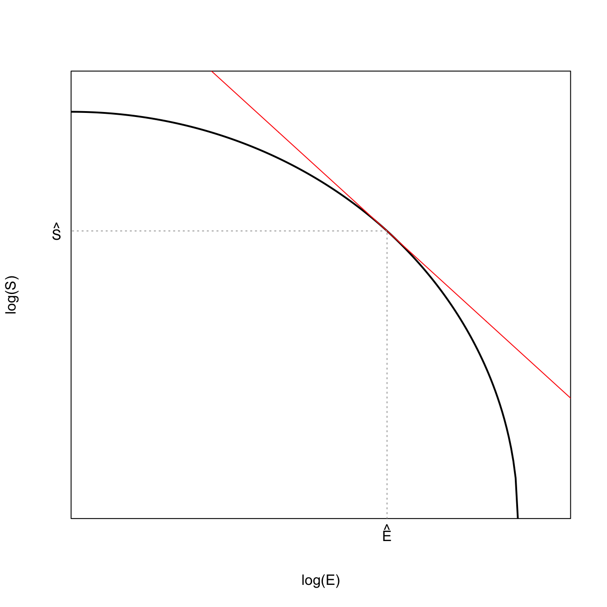
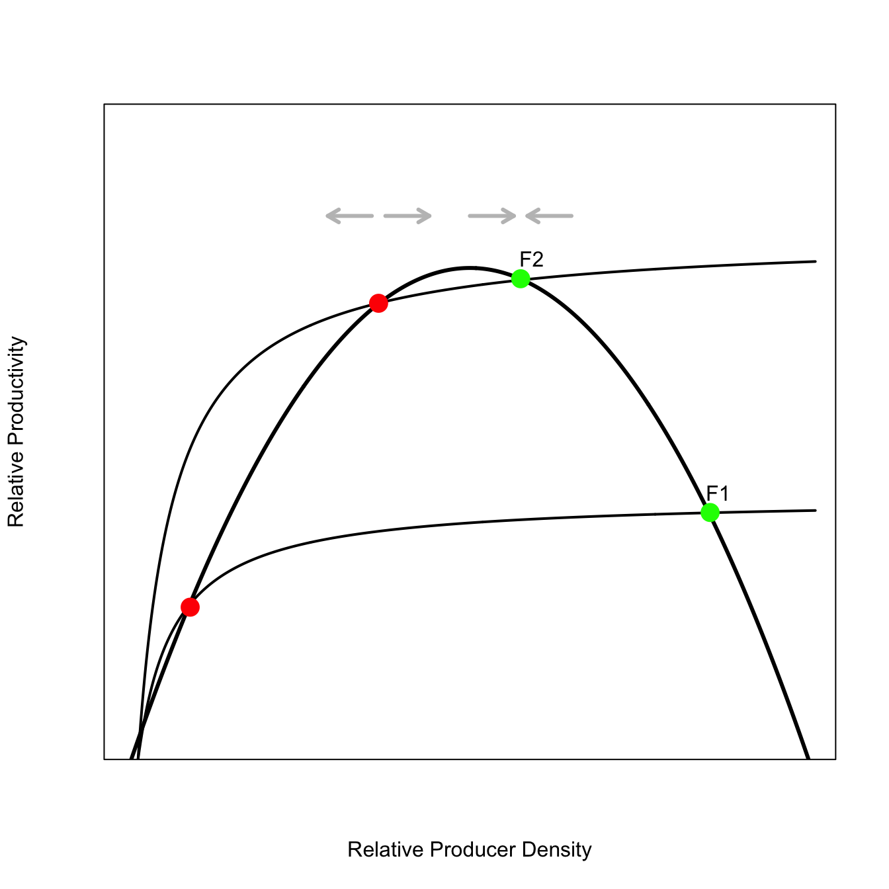
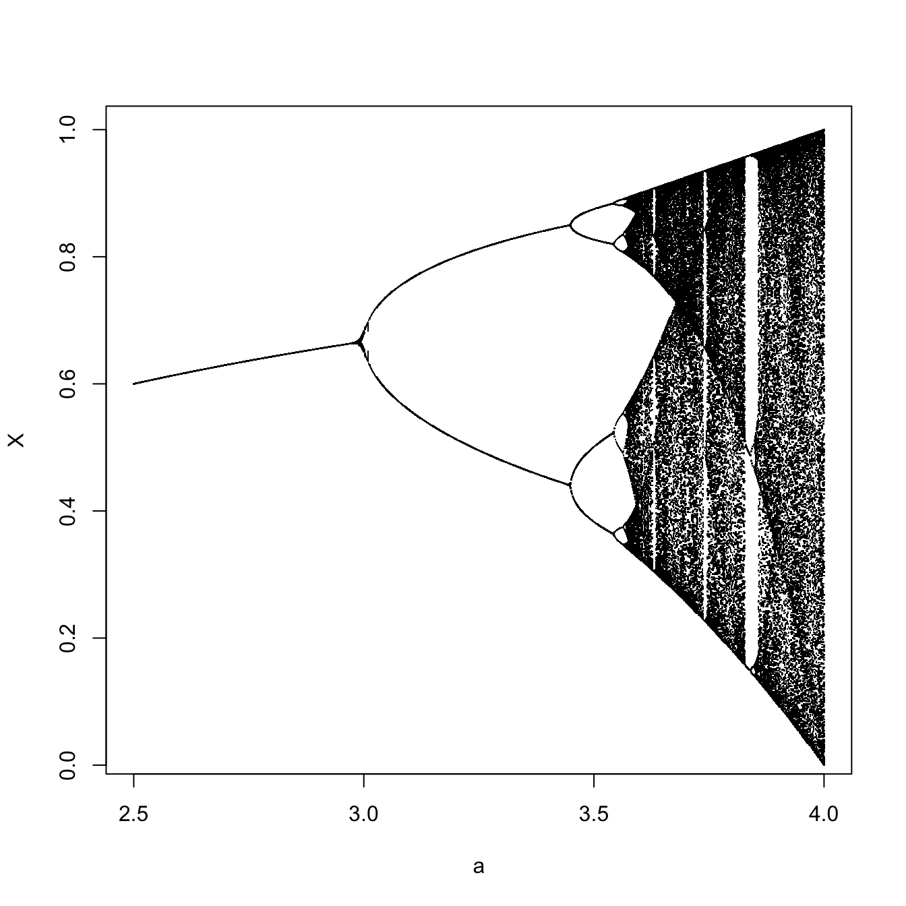

x <- seq(0,0.8,length=100)
L <- seq(0,1,length=100)
K <- (1/L^0.7)^(1/0.3)
#derivative
fprime <- -5.6/(0.3^2.4)
# make a function to calculate K from L
kf <- function(L) (2/L^0.7)^(1/0.5)
# pick an arbitrary point for tangency
a <- 0.3
plot(L,kf(L), type="l", lwd=2, axes=FALSE, frame=TRUE,
yaxs="i", xaxs="i",
xlim=c(0,1), ylim=c(0,50),
col=grey(0.65),
xlab="Labor", ylab="Capital")
# tangent
lines(x, kf(a)+fprime*(x-a), lwd=1, col="black")
# values on the axes
segments(0.3,0,0.3,kf(0.3), col=grey(0.65), lty=3)
segments(-0.1,kf(0.3),0.3,kf(0.3), col=grey(0.65), lty=3)
mtext(expression(hat(L)),1,at=0.3, padj=0.5)
mtext(expression(hat(K)),2, at=kf(0.3), adj=2, padj=0.5, las=2)3 Theoretical Scientific Figures in R
3.1 Introduction
R has powerful graphics capabilities. While we typically use these for plotting data, we can also make publication-quality plots for elucidating theoretical topics as well.
These notes are a very tentative start to a much larger body of work. I hope they are nonetheless helpful in their rather incomplete form.
3.2 The Taylor-Series Approximation is Your Friend
You may be familiar with Taylor polynomials (or series) and how useful they are for applied mathematics and science. A Taylor series allows you to approximate a function \(f(x)\) in terms of an infinite sum of its derivatives taken at a single point \(a\):
\[ f(x) = f(a) + f'(a)(x-a) + \frac{f''(a)(x-a)^2}{2!} + \frac{f'''(a)(x-a)^3}{3!} + \cdots \]
When we truncate the Taylor series at the first term, we produce a linear approximation of our function. In other words, it’s a tangent line. It turns out that we often want to draw tangents in theoretical figures and just as the Taylor series can help us derive theory, so too can it help us generate plots!
3.2.1 Cobb-Douglas Production Function
The Cobb-Douglas production function is a model for production that is the product of two power functions. The classic model combines capital (\(K\)) and labor \(L\). The inputs are raised to powers \(\alpha\) and \(\beta\).
\[ W = K^{\alpha} L^{\beta} \]
In the Cobb-Douglas form, the exponents also turn out to be the elasticities of production with respect to the inputs. So, suppose that \(\alpha=0.25\), this means that a 1% increase in the capital will increase overall wealth by 0.25%.
If \(\alpha + \beta =1\), then there are constant returns to scale: doubling inputs will double the output. If, on the other hand, \(\alpha + \beta > 1\), there are increasing returns to scale so that doubling inputs will more than double the output.
The optimal balance between capital and labor occurs when a budget line is tangent to this curve.
Graphics Tip: Note that in labeling the optimum value of capital, we used the argument las=2. This says to print text always perpendicular to the axis and is useful for labeling interesting points on particularly the vertical axis.
You will notice that in most of these plots, we suppress the axis labeling. For a theoretical plot, we want to see the shape of the relationships between variables and care less about the specific \((x,y)\) values. This means that we typically include in the plot() command the argument axes=FALSE. When we turn off the axes, this also, by default, removes the frame around the axes. We usually want that, so we have to also include the argument frame=TRUE.
We can add mathematical, typset material to any text (e.g., axis labels, labels for equilibria and other interesting points, titles, etc.) using expression(). There is a stripped-down markup language for this in R. To learn more, do a help search for plotmath.
3.2.2 Marginal Value Theorem
Something like the Marginal Value Theorem (MVT), a phrase coined by Charnov (1976), appears in many applications: foraging theory (Charnov 1976), sexual selection (Parker and Stuart 1976), the evolution of virulence (Baalen and Sabelis 1995), and of course, life history theory (Smith and Fretwell 1974). If you pay careful attention, you will notice that it’s always the maximization of some sort of ratio, where the numerator and denominator trade-off. In this case, the MVT solution arises naturally from the quotient rule for differtiation. The MVT states that the optimal value of the ratio fitness measure can be found when a straight line rooted at the origin is tangent to the fitness/constraint function. This the eponymous “marginal value.”
In previous examples, we specified the tangent point. Here we solve for the optimal value, which for the marginal value theorem, says that the rate is maximized where a line rooted at the origin is tangent to the utility function. We can mess around with different slopes and try to find something that’s approximately right or we can find the actual solution using the root-finding function in R. I need to acknowledge Mike Price here because he helped me get unstuck as I flailed to get uniroot() to work. I should also note that when I publish notes like this, even if I accompany them with caveats about incompleteness, you are seeing the product of lots of trial and error (lots of error, I assure you). Remember, the struggle is part of the scientific process.
Anyway, code for the marginal value theorem (in its many guises).
x <- seq(0,20,length=500)
# utility function fp> 0 fpp < 0
# turns out that RMarkdown does not handle comments with single quotes
# fp == deriv of f; fpp == 2nd deriv of f
f <- function(x) {
1 - exp(-0.2*(x-1))
}
# derivative of the utility function
fprime <- function(x) {
0.2*exp(-0.2*x)*exp(0.2)
}
# f + fp*(z-x) = 0
# z = x -(f/fp)
# solve for tangency; find the root of this
xinter <- function(x) {
return(x - f(x)/fprime(x))
}
soln <- uniroot(xinter,c(0,10))
plot(x,f(x), type="l", lwd=2, xaxs="i", yaxs="i",
xlab="Time",
ylab="Rate of Gain",
ylim=c(0,1))
lines(x,(f(soln$root)/soln$root)*x,col="red")
segments(soln$root,0,soln$root,f(soln$root), lty=2, col="red")
segments(0,f(soln$root),soln$root,f(soln$root), lty=2, col="red")
mtext(expression(hat(t)),1,at=soln$root, padj=1)
## some non-optimal adaptive functions
lines(x,(f(2)/2)*x,col=grey(0.85))
lines(x,(f(1.5)/1.5)*x,col=grey(0.85))
lines(x,(f(11)/11)*x,col=grey(0.85))Marginal value theorem plot. A line rooted at the origin that is tangent to the gain curve provides the optimal patch-residence time, \(\hat{t}\).
Graphics Tip: In this case, we had to find the point where a line rooted at the orgin is tangent to the gain curve. We found this using uniroot() which is a one-dimensional optimization routine that searches an interval for the zero of a function. The function returns an list with at least four elements. The one we want is called root, hence the use of soln$root in plotting arguments in the above code.
3.2.3 Optimal Age at First Reproduction
Simple Example of the optimal trade-off between adult reproductive value (\(E\)) and juvenile recruitment (\(S\)). Charnov (1997) has suggested that fitness is a product, broadly construed, of three things: juvenile recruitment, annual fertility of adults, and adult life expectancy. In turn, these elements can be combined. For example, the product of annual fertility and adult life expectancy can be thought of as adult reproductive value because it is the expected total reproduction over the an individual’s lifespan, conditional on them being recruited into the breeding population. As Charnov notes, these things are likely to trade-off. Moreover, the multiplicative form of fitness makes these trade-offs particularly straightforward to visualize and analyze.
When we plot the allowable combinations of \(\log(S)\) and \(\log(E)\), we get a convex plot of the iso-fitness plot linking the logs of \(E\) and \(S\), which indicates diminishing marginal returns in both dimensions. The optimal life history is the one for which a line with a slope of -1 is tangent to this iso-fitness constraint curve. Why? The fitness measure (assuming population stationarity) is \(R_0 = S\, E\). Take logs such that \(\log(R_0) = \log E + \log S\) and differentiate with respect to age at first reproduction (\(\alpha\); which, in Charnov’s formalism, is the control parameter for the life history):
\[ \frac{d \log R_0}{d\alpha} = \frac{d \log E}{d\alpha} + \frac{d \log S}{d\alpha}. \]
Set this equal to zero and rearrange. Divide \(d\log E/d\log \alpha\) by \(d\log S/d\log \alpha\) and we find the optimality criterion:
\[ \frac{d\log E}{d \log S} = -1. \]
g <- seq(0,sqrt(1/5),length=200)
h <- sqrt(1-(5*g^2))
hf <- function(g) sqrt(1-(5*g^2))
## derivative
fp <- function(g) -5*g/sqrt(1-5*g^2)
# solve for tangency; find the root of this
# note the sign change
ginter <- function(g) {
return(g + hf(g)/fp(g))
}
## do not search over whole interval
## because g values > sqrt(5) will give NaNs!
a <- uniroot(ginter,c(0,0.4))$root
## this simply extends the plotting range
## so that the tangent line fills the plotting range
gg <- seq(0,0.5+a,length=500)
plot(g,hf(g), type="l", lwd=2, axes=FALSE, frame=TRUE,
yaxs="i", xaxs="i",
ylim=c(0,1.1), xlim=c(0,0.5),
xlab="log(E)",
ylab="log(S)")
## first-order Taylor Series approx
lines(gg, hf(a)+fp(a)*(gg-a), col="red")
segments(a,0,a,hf(a), col=grey(0.65), lty=3)
segments(-0.1,hf(a),a,hf(a), col=grey(0.65), lty=3)
mtext(expression(hat(E)),1,at=a, padj=0.5)
mtext(expression(hat(S)),2, at=hf(a), adj=2, padj=0.5, las=2)
3.2.4 Fitness Sets
Richard Levins (1962) introduced a the idea of fitness sets as a way to think about evolution in variable environments. This approach was more fully fleshed out in his subsequent monograph (R. Levins 1968). The fundamental idea is to represent the fitness of organisms in the different conditions that make up their variable environments and then find the strategy that maximizes fitness across these environments. The optimum can be a generalized compromise across the different environments or it can be the production of polymorphic specialized phenotypes that better match specific environmental conditions.
Consider first a population with two phenotypes where the peak fitness in the two environments are quite separated from each other such that the fitness functions do not overlap tremendously. It’s conventional to assume Gaussian distributions of fitnesses with respect to the environment for simplicity, but to make things more interesting, we can use Gamma distributions, which will have more right-skew. The basic idea behind using these peaked functions is that there is an optimum for the environment and that fitness falls off as you move away from this optimum value of the phenotype. A Gaussian distribution just makes quite specific assumptions about how fitness falls off as the phenotype differs from the optimum: it does so symmetrically around the maximum and it declines exponentially in the squared difference from the optimum, while the Gamma distributions will be asymmetric in the way fitness falls off from the peak. The actual form of the fitness function will depend on the particulars of the environment and the phenotypes in question.
## skewed gamma distributions
x <- seq(0,25,,1000)
k1 <- 9
s1 <- 0.5
k2 <- 7.5
s2 <- 1
plot(x,dgamma(x,shape=k1,scale=s1), type="l", lwd=2,
axes = FALSE, frame=TRUE,
xlab="Phenotype", ylab="Fitness")
lines(x,dgamma(x,shape=k2,scale=s2))In this figure, we plotted the fitness functions against the environment. We can cut out the middleman, as it were, and simply plot the fitness functions against each other in a manner analogous to phase-plane analysis of, e.g., the Lotka-Volterra predator-prey model. Environment becomes implicit in the plots. What we have done is represent all possible phenotypes in our 2-dimensional fitness space.
A quick note on convexity is probably warranted here. A space is said to be convex if, for any two points contained within the space, the entirety of the line segment that connects these points is also contained within the space. It’s easy to see that a line segment connecting points in horns of this fitness set would not be entirely contained within the set.
Our two distributions overlap quite a bit and we will see that they form a convex fitness set. This suggests the geometrical interpretation of convexity, namely, that it implies the ability of a compromise phenotype. To find the optimal (compromise) phenotype, we add the adaptive function for a coarse-grained environment. For a coarse-grained environment, the adaptive function will have a hyperbolic form. Here again, the issue of convexity arises. An adaptive function that takes the hyperbolic form as in figure 3, is also said to be convex. Just as a convex fitness set implies an an optimum phenotype that is a compromise, convexity in the adaptive function suggests that average values have higher fitness than extremes. As the adaptive-function isoclines move from the center to the extremes, the increase in fitness in one dimension must be greater than the reduction of fitness in the other dimension. This is also related to diminishing marginal rate of substitution. Note, for example, as the isocline moves away from its convex center upward in the direction of \(W_2\), it takes increasing fitness in the \(W_2\) dimension to make up for lost fitness in the \(W_1\) direction.
## for the isoclines
G <- seq(0,0.5,length=100)
alpha <- 0.5
beta <- 0.5
# simple function to calculate hyperbolic isolclines following Cobb-Douglas form
kf <- function(G,W,alpha,beta) (W/G^alpha)^(1/beta)
## fitness set
plot(dgamma(x,shape=k1,scale=s1),dgamma(x,shape=k2,scale=s2), lwd=3,
type="l", axes = FALSE, las=1,
xlim=c(0,0.4), ylim=c(0,0.25),
xlab=expression(W[1]), ylab=expression(W[2]))
box()
## convex adaptive functions
lines(G,kf(G=G,W=0.05,alpha=0.75,beta=1), lty=2)
lines(G,kf(G=G,W=0.05,alpha=0.85,beta=1), lty=2)
lines(G,kf(G=G,W=0.05,alpha=0.63,beta=1), lty=2)3.2.5 Graphical Newton-Raphson Method
Another cool application of tangent lines in plots illustrates the popular and powerful family of optimization algorithms are broadly known as “Newton’s Method’ or the”Newton-Raphson Algorithm.” This algorithm finds roots of functions – that is, points where the function is zero. The basic idea is that we start from an initial guess point on our function. We then draw a line tangent to our function at this point. Finding the \(x\)-intercept for the tangent line, we repeat the process only this time drawing our tangent line from the point on the curve corresponding to the \(x\)-intercept of our last tangent line. It turns out that, for some initial guess, \(x_0\), the value \(x_1 = x_0 - f(x_0)/f'(x_0)\) is a better estimate of the root. We can then repeat this process until we are satisfactorily close to the root of the function. We can make a quick graphical demonstration Newton’s method for a very simple function \(y=x^2-9\). We start with a guess at \(x=8\). The plot shows three iterations (numbered sequentially). We can see that each iteration gets much closer to the root of this equation (at \(x=3\)). In fact, it gets so close after three steps that plotting another iteration is indistinguishable from the correct solution (though for a realistic tolerance, it would take a couple more steps to get right to \(x=3\)).
## graphical newton-method
x <- seq(0,10, length=100)
y <- function(x) x^2 - 9
x1 <- function(a) a-y(a)/(2*a)
# first iteration
a <- 8
plot(x,y(x),type="l",lwd=3)
abline(h=0)
points(8,55, pch=19, cex=1.5)
text(8,59,"1")
lines(x, y(a) + (x-a)*2*a, col="red")
# second iteration
points(x1(a),y(x1(a)), pch=19, cex=1.5)
text(x1(a),y(x1(a))+4,"2")
a <- x1(a)
lines(x, y(a) + (x-a)*2*a, col="red")
# third iteration
points(x1(a),y(x1(a)), pch=19,cex=1.5)
text(x1(a),y(x1(a))+4,"3")
a <- x1(a)
lines(x, y(a) + (x-a)*2*a, col="red") If we were really feeling ambitious, we could animate this!
3.3 Using expression() to Draw Functional-Response Curves
There are several different ways that you can draw a theoretical curve. In the last chapter, I used curve() to draw many of the figures. I find that I have better control over the overall figure, however, if I can access the equation and its evaluation more directly. The quick-and-dirty way to do this is to write an expression(). An expression is an object whose evaluation is delayed until explicitly called for with the function eval(). So you can define your equation of theoretical interest, then enter its inputs, and then evaluate it when it is convenient for you (e.g., when you’re plotting).
We can demonstrate this functionality by comparing the Holling family of functional-response curves. These curves model, among other things, the satiation of a predator as prey density increases.
The most commonly-used of these functional responses is certainly Holling Type II, which is also known (e.g., in physiology) as the Michaelis–Menten function, which is a simple, if ubiquitous, model of enzyme kinetics.
x <- seq(0,10, length=200)
a <- 0.7
b <- 1.5
c <- -1.5
h2 <- expression(a*x/(1 + a*x))
h3 <- expression(a*x^2/(b^2+x^2))
h4 <- expression(a*x^2/(b+c*x+x^2))
#
plot(x, eval(h4), type="l", lwd=3, col="magenta", xaxs="i", yaxs="i", axes=FALSE, xlab="Abundance", ylab="Response", ylim=c(0,1.2))
lines(x,eval(h3), lwd=3, col="cyan")
lines(x, eval(h2), lwd=3, col="black")
legend("topright", c("Type II", "Type III", "Type IV"), col=c("black","cyan","magenta"), lwd=3)
box()Graphics Tip: We add a legend to a figure, not surprisingly, with the function legend(). The first argument to legend() is its location. You can specify this with x,y-coordinates or, more simply, with a keyword from the list that includes: “bottomright”, “bottom”, “bottomleft”, “left”, “topleft”, “top”, “topright”, “right” and “center”. Sometimes you need to fiddle around with the location of the legend as it might appear quite different under different graphics devices (e.g., in the Plots window of RStudio vs. a .png file vs. a .pdf file).
3.4 Fold-Catastrophe Model
A catastrophe is a sudden shift in system state (Zeeman 1976). An interesting form of catastrophe, which Scheffer (2009) discusses in detail, is the fold catastrophe.
This is a pretty complicated figure. The solid parts of the curve are stable – when the system state is perturbed when in the vicinity of this part of the attractor, it tends to return, as indicated by the grey arrows pointing back to the attractor. The dashed part of the attractor is unstable – perturbations in this neighborhood tend to move away from the attractor. This graphical representation of the system makes it pretty easy to see how a small perturbation could dramatically change the system if the current combination of conditions and system state place the system on the attractor near the neighborhood where the attractor changes from stable to unstable. The figure illustrates one such scenario. The conditions/system state start at point \(F1\). A small forcing perturbs the system off this point across the bifurcation. Further forcing now moves the system way off the current state to some new, far away, stable state. We go from a very high value of the system state to a very low value with only a very small change in conditions. Indeed, in this figure, the conditions remain constant from point \(F1\) to the new value indicated by the white point – just a brief perturbation was sufficient to cause the drastic change.
x <- seq(-12,12,length=10000)
y <- seq(12,10/sqrt(3), length=1000)
## fold-catastrophe is a cubic
plot(-x^3+100*x,x,type="l", axes=FALSE, lwd=2, lty=2,
xlab="Conditions", ylab="System State")
box()
lines(-y^3+100*y,y, lwd=2)
lines(y^3-100*y,-y, lwd=2)
# unstable
arrows(-200,-5,-200,-2.75, code=1, lwd=3, length=0.1, col=grey(0.75))
arrows(-200,-1.5,-200, 0.75, code=2, lwd=3, length=0.1, col=grey(0.75))
#lower stable
arrows(-200,-6,-200, -8.25, code=2, lwd=3, length=0.1, col=grey(0.75))
arrows(-200,-11.5,-200, -9.25, code=2, lwd=3, length=0.1, col=grey(0.75))
#upper stable
arrows(-200,13.5,-200, 11.25, code=2, lwd=3, length=0.1, col=grey(0.75))
arrows(-200,8.25,-200, 10.5, code=2, lwd=3, length=0.1, col=grey(0.75))
# use locator() to find coordinates
points(357,7, pch=21, cex=2, lwd=3, bg=grey(0.75))
text(376.6749, 7.87279, "F1")
points(357,-11.452987, pch=21, cex=2, bg="white")
arrows(357,6.5,357,4, lwd=3, length=0.1)
arrows(357,3.5,357,-10.8, code=2, lwd=3, length=0.1, col=grey(0.75))Graphics Tip: For the fold catastrophe, we want the upper and lower arms of the curve to be solid lines, indicating a that the attractor lies in a basin of attraction in these regions, and a dashed line in the middle, indicating that the attractor is unstable there. To do this we plot the whole curve as a dashed line lty=2 and then plot solid lines over this curve in the regions we want it to be solid. Lots of trial-and-error in making such a plot!
3.4.1 Mechanistic Foundation of Fold-Catastrophe
The fold-castastrophe may seem like an incredibly specific model. It turns out there are various very natural ways of constructing such an attractor. Here, we discuss the approach of Noy-Meir (1975) for a resource-exploitation case.
# Logistic Recruitment
logistic.recruit <- expression(r*N*(1 - (N/K)^theta))
no <- 1
r <- 0.45
K <- 100
theta <- 1
N <- seq(0,K,length=500)
# Holling Type II Functional Response
h2 <- expression(a*N/(b + a*x))
x <- N+1
a <- 0.7
b <- 3
plot(N,eval(logistic.recruit), type="l", yaxs="i", lwd=3, axes=FALSE, xlab="Relative Producer Density", ylab="Relative Productivity", ylim=c(0,15))
box()
lines(x, 6*eval(h2), lwd=2)
lines(x, 12*eval(h2), lwd=2)
points(c(8.702413, 36.521362, 57.497146, 85.464859), c(3.485678, 10.441517, 11.003335, 5.652690), col=c("red","red","green","green"), cex=2, pch=16)
arrows(36.521362-7.5, 10.441517+2, 36.521362-1, 10.441517+2, code=1, lwd=3, length=0.1, col=grey(0.75))
arrows(36.521362+1, 10.441517+2, 36.521362+7.5, 10.441517+2, code=2, lwd=3, length=0.1, col=grey(0.75))
#
arrows(57.497146-7.5, 10.441517+2, 57.497146-1, 10.441517+2, code=2, lwd=3, length=0.1, col=grey(0.75))
arrows(57.497146+1, 10.441517+2, 57.497146+7.5, 10.441517+2, code=1, lwd=3, length=0.1, col=grey(0.75))
text(c(59.13355, 86.65497), c(11.458140, 6.107494), c("F2", "F1"))
There are three fixed points where the recruitment curve and the extraction curve intersect. The green points are stable fixed points, whereas the red points are unstable. The third set of points is near zero and I’ve not drawn those just to keep the plot less cluttered. This fixed point is also stable.
If we imagine keeping the recruitment curve constant but sweeping extraction curves continuously up through the space (as we have for one big jump in the plot from \(F1\) to \(F2\)) and tracked the three fixed points along this sweeping, we would have a fold catastrophe.
3.5 Cobwebbing
With a discrete-time model in one dimension (e.g., an unstructured population model), we can trace the dynamics as we iterate the model forward using a technique called cobwebbing. Here’s a quick example of a Ricker recruitment model, a density-dependent population model with the feature that it overcompensates when numbers exceed the carrying capacity. When the population of highly reactive (i.e., has strong growth potential), this tendency for overcompensation can lead to some pretty wild dynamics. This plot shows such a case.
## Ricker recruitment function
ricker.recruit <- function(r0,K,N) N*exp(r0*(1-(N/K)))
## fast growth!
r0 <- 3
K <- 50
N <- 0:150
n0 <- 25
## iterate model for 10 time steps
t <- 10
y <- rep(0,t)
y[1] <- ricker.recruit(r0=r0,K=K,N=n0)
for(i in 2:t) y[i] <- ricker.recruit(r0=r0,K=K,N=y[i-1])
plot(N,ricker.recruit(r0=r0,K=K,N=N), type="l", col="black", lwd=3, yaxs="i",
ylim=c(0,150),
xlab="Current Number of Infections", ylab="New Infections")
abline(a=0,b=1, lwd=2, col=grey(0.75))
segments(n0,0,n0,y[1], col="red")
segments(n0,y[1],y[1],y[1], col="red")
for(i in 2:(t-2)){
segments(y[i],y[i],y[i],y[i+1], col="red") #vertical
segments(y[i],y[i+1],y[i+1],y[i+1], col="red") #horiz
segments(y[i+1],y[i+1],y[i+1],y[i+2], col="red") #vert
segments(y[i+1],y[i+2],y[i+2],y[i+2], col="red") #horiz
}## this could very easily be made into a function (and probably should be)This population model with highly over-compensatory dynamics will never settle down. It always overshoots or undershoots and so fluctuates wildly. May (1976) notes that we can measure the strength of the response by the slope of the recruitment function at its equilibrium value (i.e., where the grey line of equality intersects with the recruitment function). Using the tools we’ve discussed in these note, we could calculate that slope and draw a tangent line at that point!
3.6 Numerical Derivative for Equilibria and Tangent Lines
We can recreate the figures from May’s classic paper on how simple population models can yield very complex dynamics (May 1976). May investigates the logistic map, a first-order difference equation. The logistic map is essentially a discrete-time density-dependent model.
\[ X_{t+1} = aX_t(1 -X_t), \]
where \(X_t\) is the state of the population (e.g., its size) at time \(t\) and \(a\) is the per-period multiplicative growth rate in the absence of any density effect. May (1976) shows that when \(a>3\), this model becomes unstable about its fixed point and when
# logistic map
lmap <- expression(a*x*(1-x))
x <- seq(0,1,,1000)
### first plot the unstable recruitment curve
a <- 3.414
x1 <- eval(lmap)
plot(x,x1, type="l", lwd=2,
xaxs="i", yaxs="i", ylim=c(0,1),
xlab=expression(X[t]),ylab=expression(X[t+1]))
## equilibrium for logistic map
xstar1 <- 1-(1/a)
## numerical derivative
x1p <- diff(x1)
xp <- diff(x)
### the equilibrium x is approximately x[706]
m1 <- x1p[706]/xp[706]
### use point-slope eq for a line y - y_1 = m(x - x_1)
### we know the point (xstar,xstar) so solve for eq we can use to draw line
lines(x[550:850], m1*x[550:850]-m1*xstar1+xstar1,lty=2)
### now plot the stable recruitment curve
a <- 2.707
x2 <- eval(lmap)
lines(x,x2, lwd=2, col=grey(0.75))
xstar2 <- 1-(1/a)
x2p <- diff(x2)
xp <- diff(x)
### the equilibrium x is approximately x[700]
m2 <- x2p[630]/xp[630]
lines(x[480:780], m2*x[480:780]-m2*xstar2+xstar2,lty=2)
abline(a=0,b=1)
legend("topleft", c("a=2.707", "a=3.414"), col=c(grey(0.75), "black"), lwd=2)The slope on the black curve at the fixed point is steeper than \(-45^{\circ}\) so the fixed point for this higher-growth model is unstable, while the slope at the fixed point for the grey curve is shallower than \(-45^{\circ}\) and is therefore stable.
Naturally, we could have actually calculated the derivatives of the recruitment function, but this hack actually works pretty well. You just need to make sure that your \(x\) values are fine-grained enough that the numerical derivative is approximately right.
3.6.1 Why Period Doubling
May (1976) shows how plotting the iterated map can help us understand the phenomenon of period-doubling.
lmap3 <- expression(a*(a*(a*x*(1-x))*(1-(a*x*(1-x))))*(1-(a*(a*x*(1-x))*(1-(a*x*(1-x))))))
a <- 3.7
x3 <- eval(lmap3)
plot(x,x3, type="l",lwd=2,
xaxs="i", yaxs="i",
ylim=c(0,1),
xlab=expression(X[t]),ylab=expression(X[t+3]))
a <- 3.9
lines(x,eval(lmap3), lwd=2, col=grey(0.75))
lines(x,x)The black curve is only intersected by the line of equality once, indicating that there is a single period-3 cycle for \(a=3.7\). However, when we raise the growth rate to \(a=3.9\), the hills and valleys become much steeper and six more period-3 cycles appear!
3.7 Bifurcation Diagram
May (1976) logistic map. There is a doubling of the period of the time series at \(a=3\). At \(a=3.57\), cycles of period \(2^n\) begin to appear. At \(a=3.68\), period-3 cycles appear, and at \(a=3.83\), every integer period is present. We can show this using a bifurcation diagram, which shows the different values of \(X\) that the population will cycle between for various values of \(a\). For values of \(a<3\), the equilibrium is stable, so there is only a line.
n <- 1
R <- seq(2.5,4,length=1000)
f <- expression(a*x*(1-x))
data <- matrix(0,200,1001)
for(a in R){
x <- runif(1) # random initial condition
## first converge to attractor
for(i in 1:200){
x <- eval(f)
} # collect points on attractor
for(i in 1:200){
x <- eval(f)
data[i,n] <- x
}
n <- n+1
}
data <- data[,1:1000]
plot(R,data[1,], pch=".", xlab="a", ylab="X")
for(i in 2:200) points(R,data[i,], pch=".")
3.8 Bistable Attractors
Bistability means that a dynamic system has two distinct stable states.
Efferson, Vogt, and Fehr (2020) develop a model of cultural change with heterogeneous preferences. They show that the system is characterized by bistability.
## mixture of 2 logistic curves
f <- function(a1,b1,c1,a2,b2,c2,x,p){
return(x-(p*(c1/(1+exp(-(b1*(x-a1)))))+(1-p)*(0.25+c2/(1+exp(-(b2*(x-a2)))))))
}
a1 <- 1/2
b1 <- 15
c1 <- 1
a2 <- 1/2
b2 <- 7
c2 <- 1/2
p <- seq(0,1,length=1000)
library(rootSolve)
uniroot.all(f,a1=a1,b1=b1,c1=c1,a2=a2,b2=b2,c2=c2,p=0.25,interval=c(0,1))[1] 0.5000000 0.2479318 0.7520682AA <- matrix(NA,1000,3)
for(i in 1:1000){
tmp <- uniroot.all(f,a1=a1,b1=b1,c1=c1,a2=a2,b2=b2,c2=c2,p=p[i],interval=c(0,1))
ifelse(length(tmp)==1,AA[i,1] <- tmp,
ifelse(length(tmp)==2,AA[i,1:2] <- tmp, AA[i,] <- tmp))
}
## Attractor
plot(p[-1000],AA[1:999,3],type="l", lwd=3,
xlab="Proportion Wearing Masks",
ylab="Probability of Mask Adoption",
xlim=c(0,1),ylim=c(0,1))
lines(p[-1000],AA[1:999,2], lwd=3)
lines(p[-1000],AA[1:999,1], lty=2, lwd=3, col="grey")
lines(p[1:44],AA[1:44,1], lwd=3)
arrows(x0=c(0.2,0.4,0.6,0.8,1.0), y0=0.55, x1=c(0.2,0.4,0.6,0.8,1.0), y1=0.65,
lwd=3, col="red", length=0.1)
arrows(x0=c(0.2,0.4,0.6,0.8,1.0), y0=0.45, x1=c(0.2,0.4,0.6,0.8,1.0), y1=0.35,
lwd=3, col="red", length=0.1)
arrows(x0=0, y0=0.55, x1=0, y1=0.65,
lwd=3, col="red", code=1, length=0.1)
arrows(x0=0, y0=0.45, x1=0, y1=0.35,
lwd=3, col="red", code=1,length=0.1)3.9 Polygons
To create a polygon between two curves, \(y_1\) and \(y_2\), which are both functions of \(x\), you need to pass polygon() a concatenated vector of \(x\) and the reverse of \(x\) for the first vector, and then a concatenated vector of \(y_2\) and the reverse of \(y_1\) for the second vector.
Here, fill in the polygon formed between the convex part of a logistic curve and a straight line that connects its endpoints.
x <- seq(10,30,,500)
ux <- function(a,b,x) 1/(1+exp(-(x-a)/b))
a <- 20
b <- 1.75
x1 <- seq(10,20,,250)
# straight line
y1 <- (x1-10)/20
# convex part of logistic
y2 <- ux(a=a,b=b,x=x1)
plot(x,ux(a=a,b=b,x=x), type="l", lwd=3, axes=FALSE, frame=TRUE,
xaxs="i",
xlab="Time", ylab="Technological Development")
segments(10,ux(a=a,b=b,x=10),30, ux(a=a,b=b,x=30), lwd=2, col=grey(0.85))
polygon(c(x1, rev(x1)), c(y2, rev(y1)), col="plum")Probably one of the most common uses for polygons is to fill in the tail (or some other part) of a probability density to show how much relative probability is contained in an interval or a tail. Here we compare the tail probability of a standard normal distribution with a low-df \(t\) distribution. We will color in the upper tail above the value of 1.96, the approximate 97.5th quantile of the standard normal distribution and the conventional definition of “statistical significance.”
## normal
z <- seq(-20, 20, length=2000)
p <- dnorm(z)
plot(z,p, type="l", lwd=2, xlim=c(-4,4),
xlab="Outcome", ylab="Probability of Outcome")
z0 <- z[z >= 1.96] # define region to fill
z0 <- c(z0[1], z0)
p0 <- p[z >= 1.96]
p0 <- c(0, p0)
polygon(z0, p0, col="grey")# integrate to see how much probability mass is in the tail
integrate(dnorm, 1.96, Inf)0.0249979 with absolute error < 1.9e-05Now for the \(t\) distribution
## t, df=1
q <- dt(z,df=1)
plot(z,q, type="l", lwd=2, xlab="Outcome", ylab="Probability of Outcome")
t0 <- z[z >= 1.96] # define region to fill
t0 <- c(t0[1], t0)
q0 <- q[z >= 1.96]
q0 <- c(dt(20,df=1), q0)
polygon(t0, q0, col="grey")## integrate to see how much probability mass is in the tail
integrate(dt, 1.96, Inf, df=1)0.1501714 with absolute error < 1.1e-10Ooh, pointy. Note that the \(t\) distribution decays so slowly that you can see that the polygon has a slope to it even when you extend the range out to 20. This explains why we added dt(20,df=1) as the first element of the q variable for the polygon.
3.10 S-Shaped Curves
There are numerous instances where we want to draw S-shaped curves. For example, we might want to show density-dependent population growth or the fraction of a population who have adopted an innovation.
There are a number of ways to draw S-shaped curves. The first is to use a logistic function.
Another possibility is to use a cumulative distribution function for a normal random variable.
Here is an example of an adoption curve (E. M. Rogers 2003).
## stylized adoption curve
x <- seq(-4,4,,500)
q <- c(0.025, 0.16, 0.5, 0.84)
qq <- qnorm(q)
dd <- dnorm(qq)
zz <- rep(0,4)
plot(x, dnorm(x), type="n", axes=FALSE, frame=TRUE,
xaxs="i", yaxs="i",
xlab="Time", ylab="Fraction Adopting", ylim=c(0,1.05))
axis(2)
segments(qq,zz,qq,dd, lwd=3, col=rgb(1,0,0,0.5))
lines(x, dnorm(x), lwd=3, col=grey(0.65))
lines(x,pnorm(x), lwd=3)
legend("topleft",c("incident","cumulative"),lwd=3, col=c(grey(0.65),"black"))3.10.1 Polygyny Threshold Model
Another application of S-shaped curves in behavioral ecology is the Polygyny Threshold Model (Orians 1969).
## Polygyny Threshold
logisfun <- function(n0=1,K=100,r=0.05,t,delay=0) n0*exp(r*(t-delay))/((1+n0*(exp(r*(t-delay))-1)/K))
t <- seq(0,250,,500)
delay <- 50
n0 <- 1
K <- 100
r <- 0.05
y1 <- logisfun(t=t)
y2 <- logisfun(t=t, delay=50)
plot(t,y1/100, type="l", lwd=3, col="magenta",
axes=FALSE, frame=TRUE,
xaxs="i", yaxs="i",
ylab="Female Reproductive Success", xlab="Resource-Holding Capacity")
lines(t,y2/100, col="purple", lwd=3)
segments(150,0,150,0.6,lty=3)
segments(100,0,100,0.6, lty=3)
segments(150,0.6,0,0.6,lty=3)
mtext(expression(Delta[RHC]),1, at=125, col="red")
axis(1,at=c(100,150), labels=FALSE, col="red")
text(177,0.6, expression(RS[S]==RS[P]), col="red")
legend("topleft",c("primary","secondary"), lty=1, lwd=3, col=c("magenta","purple"))The fitness of the secondary mate is lower for all resource levels except the very highest. If the quality of an already-mated male’s territory is greater than an unmated male’s territory by \(\Delta_{RHC}\), then the fitness of the secondary female is greater than the fitness of a primary female mated to the male with the lower-quality territory. As a result, we expect a polygynous mating.
For a quick-and-dirty solution, it is convenient to just represent some equation of interest as an expression(), define some parameters, and then get the function’s values by using eval(). In most cases, it is going to be better to write a function for your equation. In this case, it allowed us to find values for FRS from the two logistic curves associated with specific values of RHC. While it might be a bit more work to write a function, it will probably save effort in the long run. I often prototype plots using expression() and then write a function once I’ve worked out the general features of the plot.
3.11 Evolutionary Stable Strategies
3.11.1 Rogers Paradox
Selection doesn’t necessarily increase mean fitness (A. R. Rogers 1988). Different Rogers.
## Figure 1 from Rogers (1988)
wi <- function(b=1,c=0.9) 1 + b*(1-c)
ws <- function(b=1,s=0,p,u=0.8) 1 + (b*(1-s)*(1-p)*(1-u))/(1 - p*(1-u))
p <- seq(0,1,,100)
cult <- ws(p=p)
acult <- rep(wi(),100)
m <- cult*p + acult*(1-p)
plot(p,cult, type="l", lwd=2, axes=FALSE, frame=TRUE,
xaxs="i",
xlab="Frequency of Social Learning (p)", ylab="Fitness")
lines(p,acult, col="red",lwd=2)
lines(p,m, col=grey(0.75), lty=2,lwd=2)
axis(1)
legend("topright", c("individual","social","mean"),
col=c("red","black",grey(0.75)), lty=c(1,1,2))
3.11.2 Producer-Scrounger Game
p1 <- seq(0,1,,200)
wthief <- expression(1.5 - 2*p1)
wfarmer <- expression(1 - 1.2*p1)
plot(p1, eval(wthief), type = "l", col="red", lwd=2,
axes=FALSE, frame=TRUE,
xaxs="i", yaxs="i",
xlab="Fraction Scroungers", ylab = "Fitness",
xlim=c(0,1), ylim=c(0,2))
lines(p1, eval(wfarmer), lwd=2, col="blue")
lines(p1,(p1*eval(wthief)+(1-p1)*eval(wfarmer)), lwd=2, lty=2)
axis(1,at=c(0,1),labels=c("0","1"))
abline(v=0.625, col=grey(0.75), lwd=1)
arrows(0.4,1.5,0.62,1.5, col=grey(0.75),lwd=2)
arrows(0.8,1.5,0.63,1.5, col=grey(0.75),lwd=2)
legend("topright", c("Scrounger","Producer","Mean"),
col=c("red","blue","black"), lwd=2, lty=c(1,1,2))
axis(3,at=0.625,labels=c("ESS"))Draw arrows to show the equilibrium and its stability.
Graphics Tip: Note how we marked the location of the ESS on the top of the plot using axis(3)!
3.12 Prey-Choice Model
x <- seq(0,20,length=500)
f <- function(x,b) {
1 - exp(-b*(x-1))
}
f1 <- function(x,a) a/x
plot(x,f(x,b=0.1), type="l", lwd=3, xaxs="i", yaxs="i",
axes=FALSE,
xlab="Item Rank",
ylab="Energy Gain",
ylim=c(0,1))
axis(1)
box()
lines(x,f(x,b=0.05), lwd=3, col="red")
lines(x,f1(x,a=2), lwd=3, col="grey")
# found approximate points using locator()
text(2.9,0.9648077,expression(E/h))
text(18.75,0.8848253,expression(E^g/t))
text(18.75,0.6362313,expression(E^b/t))
segments(5.5,0,7.4,0, lwd=10, col="green", lend=2)
text(6.45,0.04825, "Fallback Foods")In a bad year, diet breadth expands. The extent of this expansion is indicated by the green bar.
3.13 Linear Programming
From Belovsky (1987). Optimal diet for hunter-gatherers based on constraints on feeding time, digestive capacity, energy requirements, and protein needs. Uses linear programming to find the optimal solution. Belovsky shows that, contrary to much thinking about foraging, that hunter-gatherers tend to maximize either total food intake or protein and do not time-minimize.
#### constraint functions
## feeding time constraint
## 393 >= 0.34*H + 0.42*G
time.slope <- -0.42/0.34
time.int <- 393/0.34
## digestive constraint
## 700 >= H + 0.67*G
dig.slope <- -0.67
dig.int <- 700
## engergy constraint
## 1975 =< 3*H + 3.05*G (or 3.22*G)
energy.slope <- -3.05/3
energy.int <- 1975/3
## protein constraint
## 60 =< 0.15*H + 0.12*G
protein.slope <- -0.12/0.15
protein.int <- 60/0.15
# polygon top is digestion until it meets time; bottom is energy
xx <- 0:1000
ddy <- 700 - 0.67*xx
tty <- 393/.34 - (0.42/0.34)*xx
eey <- 1975/3 - (3.05/3)*xx
min(which(tty<0))[1] 937# 937
gg <- c(1:937, 937:1)
min(which(ddy>=tty))[1] 808# 808
hh <- c(ddy[1:808],tty[809:937],eey[937:1])
plot(1:1200,1:1200, type="n", yaxs="i", xaxs="i",
xlab="Gathered Food (g)", ylab="Hunted Food (g)")
abline(a=time.int, b=time.slope)
abline(a=dig.int, b=dig.slope)
abline(a=energy.int, b=energy.slope)
abline(a=protein.int, b=protein.slope)
polygon(gg,hh,col=grey(0.85), border="black")
points(807,ddy[808], pch=21, cex=1.5)
abline(h=0,lwd=2)3.14 Extreme-Value Distribution for Innovation
Innovation happens when the skill of some learner exceeds the current highest level of skill. The distribution for extreme values like this is know, oddly enough, as an extreme value distribution. There are a number of specific flavors of such distributions.
Henrich (2004) suggests that the specific EVD for the highest skill is a Gumbel distribution (a type of extreme-value distribution). The level of skill that improves culture is \(z_h\). The probability that there will be models with skill level \(z_h\) or better is small in smaller populations because this value is out in the tail of the distribution.
Two parameters: \(\alpha\) (difficulty) and \(z\) (skillfulness), which are assumed independent.
# extreme-value distribution package
library(evd)
x <- seq(0,100,,500)
plot(x,dgumbel(x,30,10), type="l", lwd=3, axes=FALSE, frame=TRUE,
xlab=expression(paste("Learner's Skill, ", z[i])),
ylab=expression(paste("Probability of Acquiring ", z[i])))
lines(x,dgumbel(x,30,15), col="magenta", lwd=3)
abline(v=60,lty=2)
mtext(expression(z[h]),1, at=60, padj=1)Note that in the more-innovative population, far more individuals exceed the critical threshold \(z_h\), but also way more people are clearly bad at the skill.
This result flows precisely from the assumption that learner’s skill follows a Gumbel distribution (i.e., Henrich 2004). It is perfectly fair to ask if this is a reasonable model, but we do know that innovation cultures make a lot of mistakes.
3.15 The Right Ibis
Leslie and Winterhalder (2002) describe a bespoke utility function they call the right ibis model. We can code that and then use it to illustrate Tainter’s model of social collapse.
ribis <- function(x,m,n,r){
if(x<0 | x>=r){
ibis <- 0
}
if(x>=0 & x<m) {
ibis <- exp(m^2/((m-n)^2) - (m*x/(m-n)^2)) * x^(m^2/((m-n)^2)) *
m^(-m^2/(m-n)^2)
}
if(x>=m & x<r){
ibis <- 1-(x-m)^2/(m-r)^2
}
return(ibis)
}
m <- 8
n <- 2
r <- 18
x <- 0:16
### Use Right Ibis for Tainter plot
## plot a nice smooth curve
y <- seq(0,16,length=100)
aaa <- rep(0,100)
for(i in 1:100) aaa[i] <- ribis(x=y[i],m=m,n=n,r=r)
mc <- ribis(x=8,m=m,n=n,r=r)
db <- ribis(x=15,m=m,n=n,r=r)
cl <- ribis(x=2.895,m=m,n=n,r=r)
plot(y,aaa,type="l", lwd=2, axes=FALSE, frame=TRUE,
xaxs="i", yaxs="i",
ylim=c(0,1.1),
xlab="Complexity", ylab="Benefits to Complexity")
segments(8,mc,0,mc,lty=3)
segments(8,0,8,mc,lty=3)
segments(15,db,0,db,lty=3, col="red")
segments(15,0,15,db,lty=3, col="red")
#segments(2.895,cl,0,cl,lty=3, col="red")
segments(2.895,0,2.895,cl,lty=3, col="red")
#mtext(expression(paste(B, "*")),2, at=mc, adj=1, las=2)
mtext(expression(B[max]),2, at=mc, adj=1, las=2)
mtext(expression(B[mid]),2, at=db, adj=1, las=2)
mtext(expression(C[lo]),1, at=2.895, padj=1)
mtext(expression(C[opt]),1, at=8, padj=1)
mtext(expression(C[hi]),1, at=15, padj=1)3.17 How Wavelets Work
Wavelets are like spectral analysis, but they work at multiple scales. Suppose we have a series \(x(t)\). The wavelet transform involves multiplying the series by the wavelet which has been stretched to various scales spanning the series and summing this product. The scale is determined by the parameter \(\tau\). Note how conceptually similar this is to calculating the covariance of two variables.
\[ W_x(a,\tau) = \frac{1}{\sqrt{a}} \int_{-\infty}^{\infty} x(t)\psi^* \left(\frac{t-\tau}{a}\right) dt = \int_{-\infty}^{\infty} x(t)\psi^*_{a,\tau}(t) dt \]
library(biwavelet)
morlet <- function(x) exp(-x^2/2) * cos(5*x)
x <- seq(-4,4,length=1000)
y <- morlet(x)
plot(x,y,type="l", lwd=3, col="purple4",
ylim=c(-1.1,1.1),
xlab="",ylab=expression(psi[a,tau](t)))
abline(h=0, lwd=0.5, lty=3)Now generate a periodic series and overlay on the mother wavelet.
f <- expression(cos(2*pi*x)*exp(-pi*x^2))
plot(x,y,type="l", lwd=3, col="purple4",
ylim=c(-1.1,1.1),
xlab="",ylab=expression(psi[a,tau](t)))
abline(h=0, lwd=0.5, lty=3)
lines(x,eval(f), lwd=2)We can see that the wavelet captures this periodic variation pretty well. The wavelet transform of the signal (red) shows that most of the function lies above the \(x=0\) line and its sum is strongly positive.
dx <- diff(x)
dx <- c(dx,dx[999])
plot(x, y*eval(f)*dx, type="l", lwd=3, col="red", xlab="x",
ylab=expression(paste("integrand, ", psi[a,tau](t), x(t))))
abline(h=0, lty=2)What happens when the signal is not well matched by the wavelet? In the next figure, the signal in black is largely random with respect to the mother wavelet. When we plot the wavelet transform of this signal (red), there is approximately an equal amount of area above and below the the \(x=0\) line and the sum is effectively zero.
# another function
f1 <- expression(cos(12*pi*x)*exp(-pi*x^2))
plot(x,y,type="l", lwd=3, col="purple4",
ylim=c(-1.1,1.1),
xlab="",ylab=expression(psi[a,tau](t)))
abline(h=0, lwd=0.5, lty=3)
lines(x,eval(f1), lwd=2)plot(x, y*eval(f1)*dx, type="l", lwd=3, col="red", xlab="x",
ylab=expression(paste("integrand, ", psi[a,tau](t), x(t))))
abline(h=0, lty=2)3.18 To Do
- Splines
- Fitness surface/contour plot
- Kinship/genealogy
- Phylogenetic trees
- DAGs/causal diagrams
- Lexis diagram
- Show how cobwebbed Ricker recruitment translates into chaotic time series